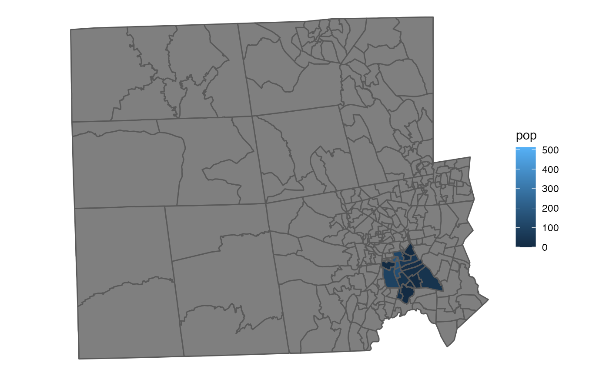
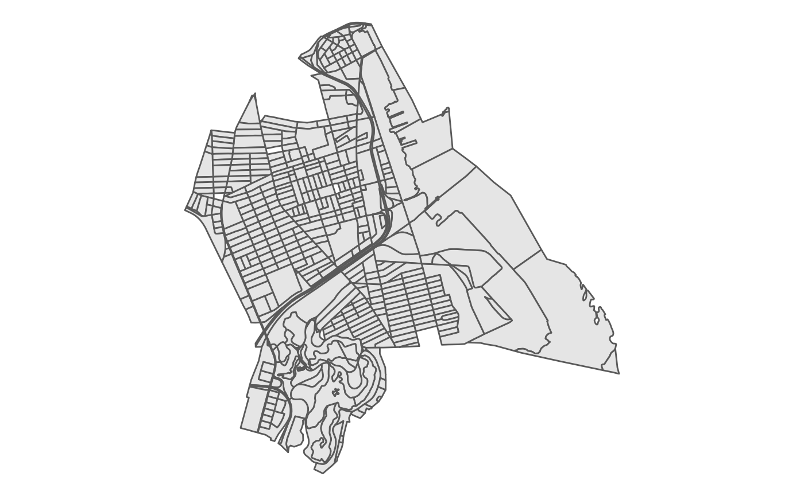

library(PL94171)
library(dplyr)
#>
#> Attaching package: 'dplyr'
#> The following objects are masked from 'package:stats':
#>
#> filter, lag
#> The following objects are masked from 'package:base':
#>
#> intersect, setdiff, setequal, union
library(ggplot2)
library(sf)
#> Linking to GEOS 3.8.1, GDAL 3.2.1, PROJ 7.2.1The US Census Bureau releases redistricting data (P.L. 94-171) following the decennial census. This vignette displays the basics of reading that data and getting it into working form.
If you have a “PL” file downloaded, it has 4 main files, which describe different tables in the data. You often want to start by noting the path to the downloaded data. In this case, we use data included in the package, which is the Rhode Island prototype.
path <- system.file('extdata/ri2018_2020Style.pl', package = 'PL94171')Then we can read the data in.
pl_raw <- pl_read(path = path)This creates a large list where each individual PL file is a separate entry in the list. To make that into a more familiar format, we can run the following:
pl <- pl_select_standard(pl_raw, clean_names = TRUE)Above, we set clean_names = TRUE, which is the default. This creates a set of variables familiar to the redist family of packages.
Now, we can subset the data to the relevant summary level, which is the formal term for the geography that we care about. We want blocks in this case, which is the default.
pl <- pl %>% pl_subset()To see all possible summary levels, take a look at:
pl_geog_levels
#> # A tibble: 85 x 2
#> SUMLEV SUMLEV_description
#> <chr> <chr>
#> 1 040 State
#> 2 050 State-County
#> 3 060 State-County-County Subdivision
#> 4 067 State-County-County Subdivision-Subminor Civil Division
#> 5 140 State-County-Census Tract
#> 6 150 State-County-Census Tract-Block Group
#> 7 155 State-Place-County
#> 8 160 State-Place
#> 9 170 State-Consolidated City
#> 10 172 State-Consolidated City-Place within Consolidated City
#> # … with 75 more rowsNow, for the prototype shape, we need a very specific input, the prototype shapefile. For testing purposes, until the 2020 data is released, this can be done as follows:
proto <- pl_get_prototype('voting_district', full_state = FALSE)Then, we can create align names and merge them:
proto <- proto %>% rename(state = STATEFP20, county = COUNTYFP20, vtd = VTDST20)
proto <- proto %>%
left_join(pl, by = c('vtd'))Now, we can plot:
proto %>%
ggplot(aes(fill = pop)) +
geom_sf() +
theme_void() This uses a small subset of the prototype PL data for Rhode Island that’s included in the package.
An additional useful feature is to select, subset, and add geometries in one function, using pl_tidy_shp. This relies on the tigris package in the background to download the relevant shapes. It also subsets to whatever data you have in the PL yyou provide a path to.
shp <- pl_tidy_shp('RI', path)
shp %>%
ggplot() +
geom_sf() +
theme_void()